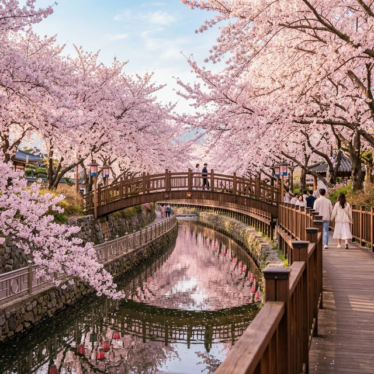
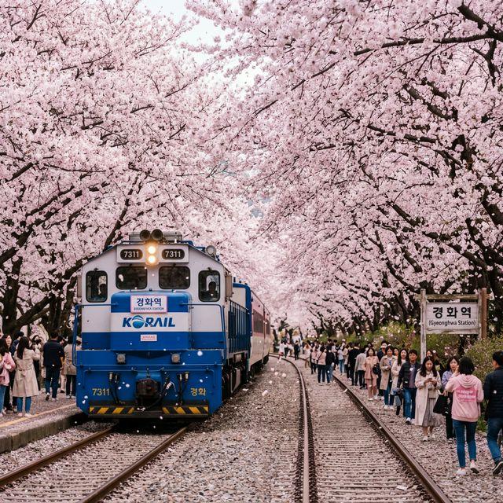
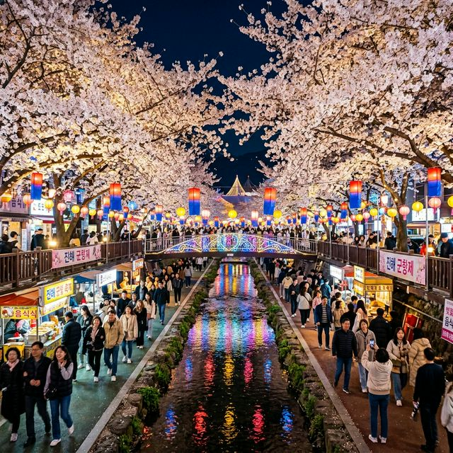

솔직히 이번 벚꽃 개화 시기 맞추기가 참 힘들었죠? 다행히 올해 진해는 축제 개막(3월 27일)에 맞춰 아주 예쁘게 꽃망울을 터뜨렸습니다. 오늘 오전 7시 기준으로 여좌천 로망스다리 인근은 거의 90% 만개하였고, 해안가인 명동 쪽은 약 70% 정도의 개화 상태를 보이고 있습니다.
오늘 낮 기온이 22도까지 올라갈 것으로 예보되어 있어, 오후가 되면 진해 전역이 완전한 만개 상태가 될 것으로 보입니다. 이번 주말이 진해군항제 최고의 '피크타임'이 될 것임이 확실시되네요. 꽃잎이 떨어지기 전 가장 화려한 벚꽃을 보고 싶으시다면 바로 오늘이 최적의 타이밍입니다.
진해벚꽃 하면 가장 먼저 떠오르는 곳, 바로 여좌천입니다. 약 1.5km 구간의 하천 좌우로 드리워진 벚꽃들이 수면으로 가지를 뻗은 모습은 가히 장관입니다. 아침 일찍(오전 8시 이전) 방문하시면 인파 없는 고요한 벚꽃 터널을 즐길 수 있고, 밤에는 화려한 조명이 더해진 '별빛축제'가 환상적인 분위기를 자아냅니다.
여좌천은 유모차나 휠체어 이용도 가능하도록 산책로가 잘 정비되어 있어 가족 단위 방문객들에게도 안성맞춤입니다. 다만, 로망스다리 위에서 사진을 찍기 위한 대기 줄이 길 수 있으니 여유를 갖고 방문하시는 것이 좋습니다.

지금은 기차가 서지 않는 간이역이지만, 벚꽃 시즌만큼은 대한민국에서 가장 북적이는 역으로 변하는 경화역입니다. 철길을 따라 늘어선 거대한 왕벚나무들이 하늘이 보이지 않을 정도로 꽃 지붕을 만들어줍니다.
가장 인기 있는 장소는 역시 전시된 무궁화호 열차 앞이죠. 열차 창문에 비치는 벚꽃을 배경으로 인생샷을 남기려는 분들로 인산인해를 이룹니다. 여기서 꿀팁 하나를 드리자면, 열차 정면보다는 측면에서 광각 렌즈를 활용해 철길 전체를 담는 것이 훨씬 웅장하게 나온답니다.
오늘 진해 시내 진입은 '헬(Hell)'이라는 말이 어울릴 정도로 막힐 예정입니다. 시내 주차는 거의 불가능하다고 보셔야 합니다. 따라서 창원시에서 운영하는 외곽 임시 주차장에 차를 세우고 전용 셔틀버스를 타는 것이 정신 건강에 이롭습니다.
| 노선 색상 | 주요 경유지 | 운행 간격 |
|---|---|---|
| 🔵 블루라인 | 공단삼거리 → 경화역 → 중앙시장 → 제황산 → 북원로터리 | 10~15분 |
| 🟡 옐로라인 | 장복터널 → 진해문화센터 → 여좌농협 → 여좌천 | 10~15분 |
| 🔴 레드라인 | 진해구청 → 경화동 → 진해역 → 북원로터리 | 10~15분 |

금강산도 식후경이죠. 중원로터리 일대에는 대규모 야시장이 서서 벚꽃 빵, 벚꽃 아이스크림 등 시즌 한정 먹거리를 즐길 수 있습니다. 하지만 진정한 로컬 맛을 원하신다면 **진해 중앙시장**을 추천합니다. 싱싱한 아구찜이나 밀면 한 그릇은 축제장에서의 허기를 달래기에 최고입니다.
특히 올해는 '바가지 요금 근절'을 위해 가격 정찰제가 강화되었다고 하니, 예전보다 조금 더 안심하고 축제를 즐기실 수 있을 것 같습니다. 벚꽃 관련 굿즈들도 다양하니 소중한 사람들을 위한 선물 하나쯤 고르는 재미도 느껴보세요.
이번 축제의 하이라이트 중 하나인 해상 불꽃쇼는 아쉽게도 오늘이 아닌 4월 1일로 예정되어 있습니다. 하지만 오늘 오후 북원로터리에서는 이충무공 추모대제가 열려 장엄한 군항의 기개를 느낄 수 있습니다. 해군사관학교 개방도 진행 중이니 해군 관련 전시나 거북선 관람도 놓치지 마세요.
제황산 모노레일을 타고 진해탑에 올라가보세요. 벚꽃으로 뒤덮인 진해 시내 전체 야경을 한눈에 담을 수 있습니다.
드라이브 코스로 유명하지만 축제 기간엔 통제될 수 있습니다. 걷기 좋아하는 분들에겐 최고의 산책로입니다.
벚꽃 가지가 높이 있어 셀카 방이나 삼각대가 있어야 멋진 구도를 잡을 수 있습니다.
많은 인파와 교통 정체로 지칠 수도 있지만, 분홍색 눈이 내리는 진해의 거리를 걷다 보면 그 힘듦조차 봄날의 추억으로 남게 마련입니다. 서로 배려하는 마음으로 기초 질서를 지키며 축제를 즐긴다면 더욱 완벽한 여행이 될 것 같습니다.